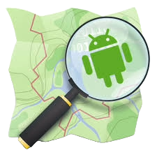

YAO MANOU CONSTANT KODJO
Géographe cartographe
EXPÉRIENCES PROFESSIONNELLES
Membre du Collectif des Leaders pour le Développement durable de l'Afrique
Mission: Responsable en charge des systèmes d'information géographique de l'association.
Enquêteur pour le projet VREF-MACVOLVO
Mission: Il s'agissait pour nous de recenser à l'aide de l'application ODK les gars de transports informels dans le district autonome d'Abidjan.
Assistant de recherche dans le projet « Urban villages by the airport Mumbai Abidjan »
Mission: Il s'agissait pour nous d'étudier la coévolution spatiale et socio-économique de Port Bouët avec l'aéroport international Félix Houphouët-Boigny à travers des observations directes couplées aux entretiens semi-structurés entre l'équipe de recherche et les riverains des villages et quartiers de Port Bouët les plus proches de l'aéroport.
Géographe contractuel à la Direction du Contrôle Financier
Mission: Préparer des missions de contrôle de la réalité du service fait suite aux dépenses publique: Traiter les données géographiques issue des contrôles; Produire des cartes et graphiques nécessaires.
FORMATION
Lycée Moderne d'Abengourou
2015-2016 Baccalauréat série C
Université Félix Houphouët-Boigny Cocody (Institut de Géographie Tropicale)
2017 - 2019 Licence en Géographie
2019-2020 Maîtrise en Géographie
Udemy certifications
Décembre 2023 ArcGIS Pro
En cours Python
Profil
Diplômé d'une maîtrise de géographie avec une solide formation en géomatique et systèmes d'information géographique (SIG), Je suis passionné par les technologies géospatiales et les sciences de la Terre d'où ma quête continue de perfectionnement.
- +225 0747315376
- kymc2604@gmail.com
- Cocody, Abidjan, Côte d'Ivoire
Langues
- FRANÇAIS
- ANGLAIS
Logiciels
-
 ArcGIS Pro
ArcGIS Pro - ENVI
- QGIS
- PowerPoint
-
 Kobocollect
Kobocollect - Excel
- OSMtracker
- Word
Compétence
- Collecte et traitement de données
- Création de base de données géographique
- Conceptions de carte thématique
- Travail en équipe
- Adaptation rapide